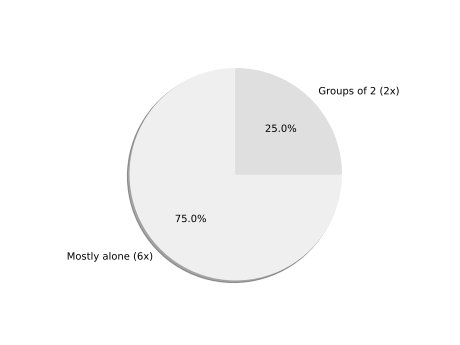
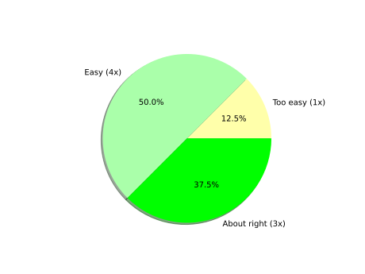

MoBi FS5 Python Course WS 23/24
Feedback participants: 8
Supervisors: Kerem, Janis, Ran, Moritz, Renpeng, Leonid
How was your impression of the course organization? (first + second week)
Options: Very good, Good, Undecided, Bad, Very bad
Datacamp
Datacamp
Have you received enough support during the first week?
Options: Very good, Good, Undecided, Bad, Very bad
Datacamp
During the first week, have you mostly worked alone or in groups?
Datacamp
Do you have any general criticism or suggestions regarding the organization or the content of the first week?
3 answer(s)
- - Collective Introduction for the 2nd week (Some groups did not have an introduction and did receive information very late. I think it would be least stressful for everyone to do an introduction for everyone together. Especially for explaining how the exam will be structured or composed (e.g. the herrmann group had an exercise sheet in week 1; if week 1 is relevant for the exam, should everyone do that sheet?) Otherwise, DataCamp is fine :)
- It's mainly work one can and should do on his own. No support is necessary. Not much organisation is necessary either.
- Maybe more communication concerning the exam, and whether attendance is required
Week 2 in Genereal
Week 2 in Genereal
Have you received enough support in Discord during the second week?
Options: Enough support, Mostly enough, Undecided, Mostly insufficient, Insufficient support
Week 2 in Genereal
During the second week, have you mostly worked alone or in groups?
Week 2 in Genereal
For you personally, what was the greatest challenge during the second week? For example, were there any specific problems which you ran into very often?
3 answer(s)
- Transition from DataCamp to Image Analysis 1. The difference between the DataCamp exercises and the Image Analysis exercises were a bit too difficult in the beginning for me. It felt somewhat of being baby-d in DataCamp and thrown down into stormy waters in the sea next. We just did Beginner's exercises in DataCamp and having a transition sheet would have been great (something that's similar to DataCamp exercises). 2. Figuring out the code all by yourself is pretty difficult when you have close to zero experience with python. It would be nice if the exercises first showed you a functional code and what it does (similar to a solution/introduction that DataCamp Provides before the exercises) and then lets you repeat it with different values or a different picture. I do like that we apply python to do image analysis and dont just stick to theroetical stuff, but as mentioned before a transition would have been really nice. 3. Generally I feel it is problematic that every student is in one out of three groups that each have different exercises. It would be nice if we could either rotate through groups 1-3, so everyone did something of every group, or if we could at least do the same exercises...
Week 2 in Genereal
For you personally, what was the greatest challenge during the second week? For example, were there any specific problems which you ran into very often?
3 answer(s)
- Using the knowledge from the first week for the second was not very intuitive. I did not have the feeling that what I learned from datacamp really prepared me for the content of the second week. A lot had to be looked online on stack overflow to understand the idea/application of certain functions and wasn't directly transferrable from knowledge gained before.
- Most times it was difficult to take the first steps of a new task, because we did not know where to start. The sobel filter task for example was quite hard at first, because we did not know the right commands at first. But we were used to this, because of the project last year, so we succeeded :) And maybe give us the results so we can check. I do not mean the code, just the images. We checked with our classmates, but were not sure every time whether it was correct.
Lab Session 1
Lab Session 1
In your opinion, how interesting/relevant was Lab Session 1?
Options: Very interesting, Interesting, Undecided, Irrelevant, Very irrelevant
Lab Session 1
How difficult was Task 1? (Intensity thresholding and Dice coefficient)
Options: Too easy, Easy, About right, Difficult, Too difficult
Lab Session 1
Please only answer this question if you tried the Bonus Task 2 (Sobel filter). How difficult was it?
Options: Too easy, Easy, About right, Difficult, Too difficult
Lab Session 2
Lab Session 2
In your opinion, how interesting/relevant was Lab Session 2?
Options: Very interesting, Interesting, Undecided, Irrelevant, Very irrelevant
Lab Session 2
How difficult was Task 1? (Otsu thresholding)
Options: Too easy, Easy, About right, Difficult, Too difficult
Lab Session 2
How difficult was Task 2? (Batch processing)
Options: Too easy, Easy, About right, Difficult, Too difficult
Lab Session 3
Lab Session 3
In your opinion, how interesting/relevant was Lab Session 3?
Options: Very interesting, Interesting, Undecided, Irrelevant, Very irrelevant
Lab Session 3
How difficult was the task?
Options: Too easy, Easy, About right, Difficult, Too difficult
Lab Session 4
Lab Session 4
In your opinion, how interesting/relevant was Lab Session 4?
Options: Very interesting, Interesting, Undecided, Irrelevant, Very irrelevant
Lab Session 4
How difficult was the task?
Options: Too easy, Easy, About right, Difficult, Too difficult
Bonus Tasks
Bonus Tasks
In your opinion, how interesting/relevant was the bonus task?
Options: Very interesting, Interesting, Undecided, Irrelevant, Very irrelevant

Bonus Tasks
How difficult was the task? (Patch-based segmentation)
Options: Too easy, Easy, About right, Difficult, Too difficult
Final Thoughts
Do you have any general criticism or suggestions regarding the organization or the content of the second week, or the course as a whole?
3 answer(s)
- 1. The Feedback I gave before about the transitioning 2. Maybe give the students an evaluation link on the beginning of each day? Because there's usually issues during the coding that you will have forgotten after a few days. That's all that came to my mind :)
- The second week was all in all good. The tutors were very knowledgeable and helpful, knowing how to aid without revealing the whole solution to the tasks. I think the lab course is too short to really learn enough. I believe between the first week of data camp and the second week of image analysis there could be a few days in between, or even a whole week to learn how to develop or apply ideas without help.
- nope